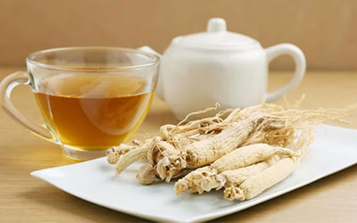

Oost-Aziatische Recepten
Drinken

Gember Thee

Ginseng Thee
Groene Thee

Oolong Thee


Tamar Hindi

Zwarte Thee
Soepen

Dal


Miso ramen
Shio ramen


Tom yam
Gerechten

Biryani

Chao fan
Chow mein

Datshi

Gaeng keow wan

Kung pao
Mala xiang quo
Murgh Makhani

Nihari
Pad Thai

Samlar Kako

Tamagoyaki
Yakisoba
Bijgerechten
Bronvermelding
Gerechten afbeeldingen
- Beshbarmak: rbth, 335485-beshbarmak-from-bashkiria-recipe-photos
- Biryani: thespruceeats, chicken-biryani-recipe-7367850
- Bulgogi: allrecipes, beef-bulgogi
- Chao fan: arroz-chaufa-chinese-peruvian-fried-rice-3029276
- Chow mein: themodernproper, chicken-chow-mein
- Ema datshi: chilliworkshop, ema-datshi
- Gaeng keow wan: rachelcooksthai, green-curry-with-chicken-and-eggplant
- Kimchi: deliciousmagazine, zo-maak-je-stap-voor-stap-klassieke-kimchi
- Kung pao: seriouseats, takeout-style-kung-pao-chicken-diced-chicken-peppers-peanuts-recipe
- Laab: seriouseats, laab-moo-isan-isan-style-minced-pork-salad-5205873
- Mala xiang guo: vforveganista, vegan-mala-xiang-guo-spicy-pot
- Mohinga: fearlesseating, mohinga-best-noodle-soup-ever
- Murgh makhana: middlebury, murgh-makhani-butter-chicken
- Nihari: swatisani, murg-nihari
- Pad thai: leukerecepten, pad-thai
- Samlar kako: angkorchef, cambodian-gumbo
- Tamagoyaki: coocking.nytimes, 1020357-tamagoyaki-japanese-rolled-omelet
- Yakisoba: proefjapan, recept-klassieke-yakisoba
Bijgerechten afbeeldingen